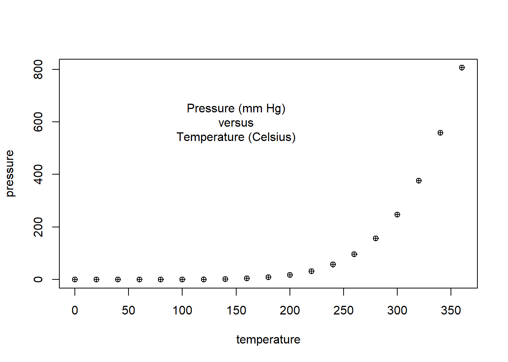
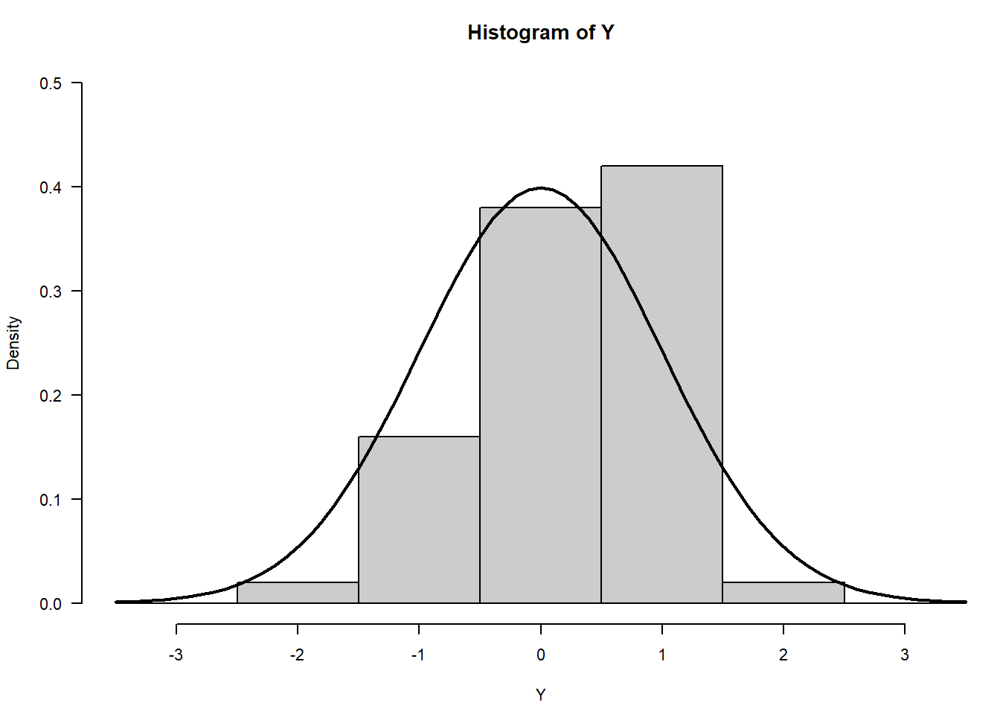
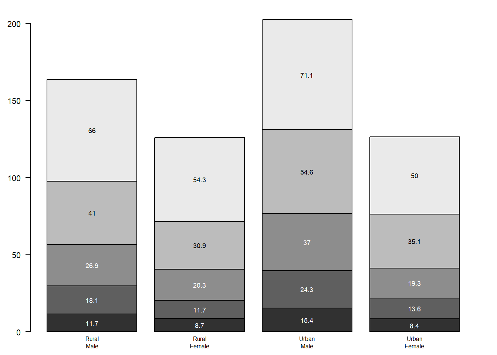
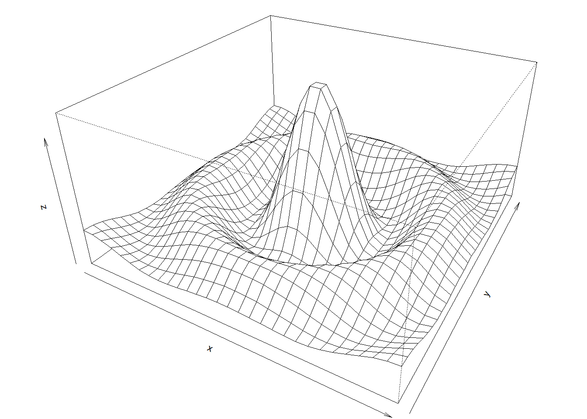
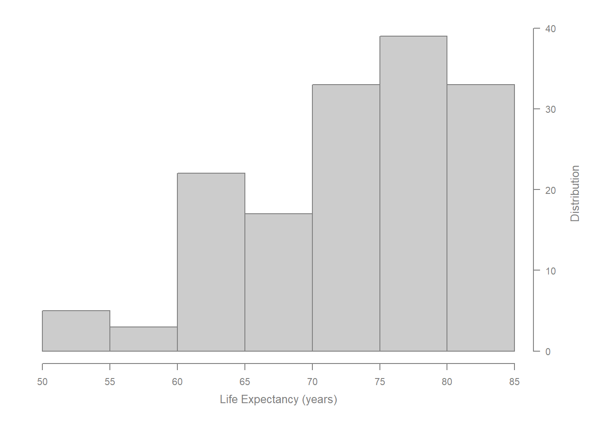
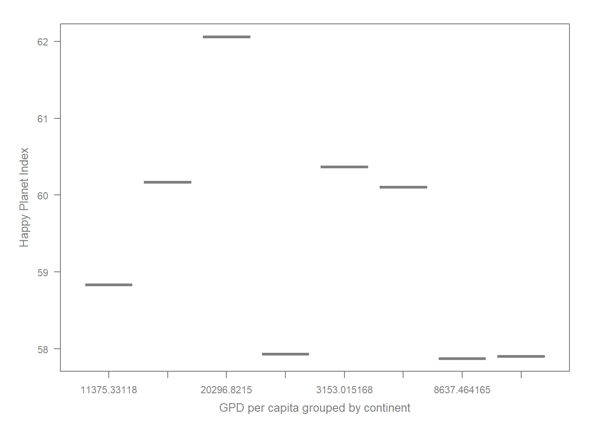
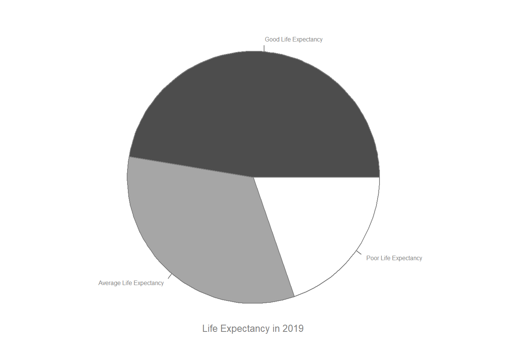

Let’s start by exploring the murrell01.R script and learn how to create plots without using ggplot.
Original: pch=16
pch=5

pch=10
pch=15
Pressure (mm Hg) versus Temperature (Celsius)
Changing the pch changes the point style on the plot.
Scatterplot

Histogram

Barplot
Boxplot

Persp
Piechart
More Plots
2. Explore Happy Planet Index
Scatterplot

Histogram

Boxplot

Pie Chart
Plots from Happy Planet Index
3. The future of Data Analysis - Edward Tufte
We are exposed to a an incredibly large amount of information by finding our way using applications like Google maps. I didn’t notice that there were 900+ words on the map! Our eyes can see a lot content and colors. Small changes like ghosting a player can make storytelling more efficient.
Gain a taste for excellent and thrive for it. Ask ourselves how things are done.
Have an open mind but not an empty head: be ready to learn new things without giving up past knowledge.
John W. Tukey: We assume that models can’t be useful because they oversimplify. However, ofter, they are. Do we even know what is useful anymore?
Most public studies are false? We are trying to tell the truth. So why? Have we been overfitting our models? are the new tools to gather new data that is not accounted for? “If you torture the data long enough, it will tell you anything you want” is a powerful quote. It highlights the overfitting problem. Replication prices is more expensive. Then, how can we understand what has been done in the past and adjust it to future data?
Electronic records did not improve mortality rate. What we really need is to use the new method to make necessary change, “to learn the truth” according to Tufte.
Confirmatory Unhacked VS Exploratory Detective Work Tufte considered this, the future of data analysis with the example of FDA. It required better research designs because the data will have to be specified in advance.
The importance of Data Forensics = Give your data a health check. - People can’t keep their own score
The Thinking eye - Ask “How do you know?” - Are there any bias? - Look at the world and not it’s representation - What we see may not contain the answer
Source Code
---title: "Assignment 2: Creating Plots"author: "Bel Khuu"date: "2022-09-18"categories: [Code, R, Plots, Assignment]image: "Rplot.png"draft: falseformat: html: code-fold: true code-tools: trueexecute: echo: false---## 1. Explore Paul Murrell's R examplesLet's start by exploring the murrell01.R script and learn how to create plots without using ggplot. ```{r}#| fig-cap: "Pressure (mm Hg) versus Temperature (Celsius)"#| fig-subcap:#| - "Original: pch=16"#| - "pch=5"#| - "pch=10"#| - "pch=15"#| layout-ncol: 2#| layout-nrow: 2plot(pressure, pch=16) text(150, 600, "Pressure (mm Hg)\nversus\nTemperature (Celsius)")plot(pressure, pch=5) text(150, 600, "Pressure (mm Hg)\nversus\nTemperature (Celsius)")plot(pressure, pch=10) text(150, 600, "Pressure (mm Hg)\nversus\nTemperature (Celsius)")plot(pressure, pch=15) text(150, 600, "Pressure (mm Hg)\nversus\nTemperature (Celsius)")```Changing the pch changes the point style on the plot.```{r}#| fig-cap: "More Plots" #| fig-subcap:#| - "Scatterplot"#| - "Histogram"#| - "Barplot"#| - "Boxplot"#| - "Persp"#| - "Piechart"#| layout-ncol: 2#| layout-nrow: 3# Examples of standard high-level plots # In each case, extra output is also added using low-level # plotting functions.# Scatterplot# Note the incremental additionsx <-c(0.5, 2, 4, 8, 12, 16)y1 <-c(1, 1.3, 1.9, 3.4, 3.9, 4.8)y2 <-c(4, .8, .5, .45, .4, .3)# Setting label orientation, margins c(bottom, left, top, right) & text sizepar(las=1, mar=c(4, 4, 2, 4), cex=.7) plot.new()plot.window(range(x), c(0, 6))lines(x, y1)lines(x, y2)points(x, y1, pch=16, cex=2) # Try different cex value? points(x, y2, pch=21, bg="white", cex=2) # Different background colorpar(col="gray50", fg="gray50", col.axis="gray50")axis(1, at=seq(0, 16, 4)) # What is the first number standing for?axis(2, at=seq(0, 6, 2))axis(4, at=seq(0, 6, 2))box(bty="u")mtext("Travel Time (s)", side=1, line=2, cex=0.8)mtext("Responses per Travel", side=2, line=2, las=0, cex=0.8)mtext("Responses per Second", side=4, line=2, las=0, cex=0.8)text(4, 5, "Bird 131")par(mar=c(5.1, 4.1, 4.1, 2.1), col="black", fg="black", col.axis="black")# Histogram# Random dataY <-rnorm(50)# Make sure no Y exceed [-3.5, 3.5]Y[Y <-3.5| Y >3.5] <-NA# Selection/set rangex <-seq(-3.5, 3.5, .1)dn <-dnorm(x)par(mar=c(4.5, 4.1, 3.1, 0))hist(Y, breaks=seq(-3.5, 3.5), ylim=c(0, 0.5), col="gray80", freq=FALSE)lines(x, dnorm(x), lwd=2)par(mar=c(5.1, 4.1, 4.1, 2.1))# Barplotpar(mar=c(2, 3.1, 2, 2.1)) midpts <-barplot(VADeaths, col=gray(0.1+seq(1, 9, 2)/11), names=rep("", 4))mtext(sub(" ", "\n", colnames(VADeaths)),at=midpts, side=1, line=0.5, cex=0.5)text(rep(midpts, each=5), apply(VADeaths, 2, cumsum) - VADeaths/2, VADeaths, col=rep(c("white", "black"), times=3:2), cex=0.8)par(mar=c(5.1, 4.1, 4.1, 2.1)) # Boxplotpar(mar=c(3, 4.1, 2, 0))boxplot(len ~ dose, data = ToothGrowth,boxwex =0.25, at =1:3-0.2,subset= supp =="VC", col="white",xlab="",ylab="tooth length", ylim=c(0,35))mtext("Vitamin C dose (mg)", side=1, line=2.5, cex=0.8)boxplot(len ~ dose, data = ToothGrowth, add =TRUE,boxwex =0.25, at =1:3+0.2,subset= supp =="OJ")legend(1.5, 9, c("Ascorbic acid", "Orange juice"), fill =c("white", "gray"), bty="n")par(mar=c(5.1, 4.1, 4.1, 2.1))# Perspx <-seq(-10, 10, length=30)y <- xf <-function(x,y) { r <-sqrt(x^2+y^2); 10*sin(r)/r }z <-outer(x, y, f)z[is.na(z)] <-1# 0.5 to include z axis labelpar(mar=c(0, 0.5, 0, 0), lwd=0.5)persp(x, y, z, theta =30, phi =30, expand =0.5)par(mar=c(5.1, 4.1, 4.1, 2.1), lwd=1)# Piechartpar(mar=c(0, 2, 1, 2), xpd=FALSE, cex=0.5)pie.sales <-c(0.12, 0.3, 0.26, 0.16, 0.04, 0.12)names(pie.sales) <-c("Blueberry", "Cherry","Apple", "Boston Cream", "Other", "Vanilla")pie(pie.sales, col =gray(seq(0.3,1.0,length=6))) ```## 2. Explore Happy Planet Index```{r}#| warning: false#| fig-cap: "Plots from Happy Planet Index" #| fig-subcap:#| - "Scatterplot"#| - "Histogram"#| - "Boxplot"#| - "Pie Chart"#| layout-ncol: 2library(readr)library(tidyverse)HPI <-read_csv("Book1.csv")HPI <-as.data.frame(HPI)# see column names # colnames(HPI) # rename columnsnames(HPI)<-c("country", "ISO", "year", "cont", "Pop", "LiExp","wellbeing", "EcoFP", "HPI", "BioCap", "GDP")HPI_US <-as.data.frame(HPI)HPI_US <- HPI_US%>%filter(HPI_US$ISO=='USA')HPI_KO <-as.data.frame(HPI)HPI_KO <- HPI_KO%>%filter(HPI_KO$ISO=='KOR')library(forecast)HPI_US_ts <-ts(HPI_US$HPI, frequency =1, start =2015) HPI_KO_ts <-ts(HPI_KO$HPI, frequency =1, start =2015)#Scatterplot#####par(las=1, mar=c(5, 5, 2, 5), cex=.7) plot.new()plot.window(range(HPI_US$year), range(HPI_US_ts))lines(HPI_US$year, HPI_US_ts)points(HPI_US$year, HPI_US_ts, pch=16, cex=2)par(col="gray50", fg="gray50", col.axis="gray50")axis(1, at=seq(2015, 2019, 1)) # Position, bottomaxis(4, at=seq(37, 39, 0.5)) # Position, rightmtext("Time (years)", side=1, line=2.5, cex=0.8)mtext("Happy Planet Index (out of 100)", side=4, line=3, las=0, cex=0.8)###### Histogram#####HPI_19 <-as.data.frame(HPI)HPI_19 <- HPI_19%>%filter(year==2019)par(las=1, mar=c(5, 2, 2, 5), cex=.7) plot.new()hist(HPI_19$LiExp, col="gray80", freq=TRUE, main=" ", xlab =" ", ylab =" ", yaxt='n')axis(4, at=seq(0, 40, 10)) # Position, rightmtext("Life Expectancy (years)", side=1, line=2.5, cex=0.8)mtext("Distribution", side=4, line=3, las=0, cex=0.8)###### Boxplot#####par(las=1, mar=c(5, 5, 2, 3), cex=.7) plot.new()boxplot(HPI ~ GDP, data = HPI_19,subset=cont, col="white",xlab="",ylab="")mtext("GPD per capita grouped by continent", side=1, line=2.5, cex=0.8)mtext("Happy Planet Index", side=2, line=2.5,las=0, cex=0.8)###### Pie Chart#####HPI_19s <- HPI_19%>%filter()%>%select(cont, GDP, HPI, LiExp)HPI_19s$LiExp.col <- HPI_19s$LiExpHPI_19s$LiExp.col[HPI_19s$LiExp.col <=65] <-3HPI_19s$LiExp.col[HPI_19s$LiExp.col >65& HPI_19s$LiExp.col <=75] <-2HPI_19s$LiExp.col[HPI_19s$LiExp.col >75] <-1HPI_19s <- HPI_19s%>%arrange(LiExp.col)%>%count(LiExp.col)HPI_19s$LiExp.col[HPI_19s$LiExp.col ==3] <-"Poor Life Expectancy"HPI_19s$LiExp.col[HPI_19s$LiExp.col ==2] <-"Average Life Expectancy"HPI_19s$LiExp.col[HPI_19s$LiExp.col ==1] <-"Good Life Expectancy"par(mar=c(2, 2, 1, 2), xpd=FALSE, cex=0.5)pie(HPI_19s$n, HPI_19s$LiExp.col, col =gray(seq(0.3,1.0,length=3))) mtext("Life Expectancy in 2019", side=1, line=-3, cex=0.8)#####```## 3. The future of Data Analysis - Edward TufteWe are exposed to a an incredibly large amount of information by finding our way using applications like Google maps. I didn't notice that there were 900+ words on the map! Our eyes can see a lot content and colors. Small changes like ghosting a player can make storytelling more efficient. Gain a taste for excellent and thrive for it. Ask ourselves how things are done. Have an open mind but not an empty head: be ready to learn new things without giving up past knowledge. John W. Tukey: We assume that models can't be useful because they oversimplify. However, ofter, they are. Do we even know what is useful anymore?Most public studies are false? We are trying to tell the truth. So why? Have we been overfitting our models? are the new tools to gather new data that is not accounted for? "If you torture the data long enough, it will tell you anything you want" is a powerful quote. It highlights the overfitting problem. Replication prices is more expensive. Then, how can we understand what has been done in the past and adjust it to future data?Electronic records did not improve mortality rate. What we really need is to use the new method to make necessary change, "to learn the truth" according to Tufte. Confirmatory Unhacked VS Exploratory Detective WorkTufte considered this, the future of data analysis with the example of FDA. It required better research designs because the data will have to be specified in advance. The importance of Data Forensics = Give your data a health check. - People can't keep their own scoreThe Thinking eye- Ask "How do you know?"- Are there any bias? - Look at the world and not it's representation- What we see may not contain the answer